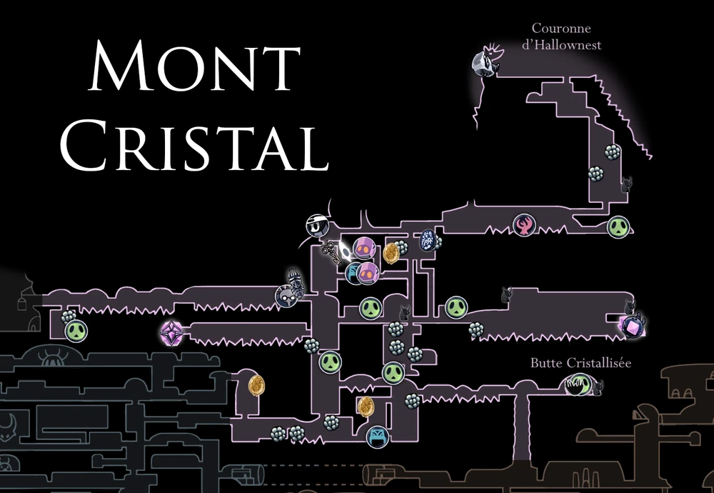
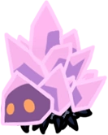
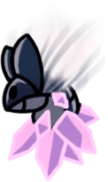
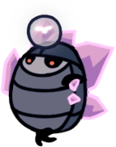
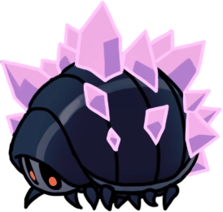
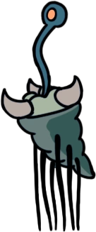
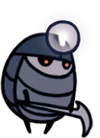
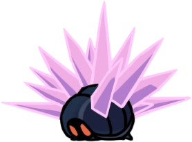
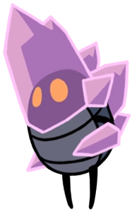

Mont Cristal
Une région énorme et scintillante située à l'est de Dirtmouth. Des mines ont été creusées dans la falaise pour obtenir les précieux cristaux de la région.
Carte
Lore
À l'époque d'Hallownest, les mines du Mont Cristal fournissaient aux villes du royaume un approvisionnement constant en cristaux. Le minerai de cristal contient de l'énergie, pas aussi puissante que l'Âme mais moins mortelle. Outre les mineurs ordinaires qui extrayaient les cristaux avec leurs griffes, des créatures comme les et les Glimbacks étaient utilisées pour transporter les chariots et les machines. Lorsque l'Infection a sévi, de nombreux mineurs sont morts et ont été réanimés par la suite. Leurs enveloppes étaient imprégnées d'un but précis, ce qui les poussait à continuer de creuser même après leur mort. Les cristaux eux-mêmes ont un étrange pouvoir caché en eux. Ils brillent dans l'obscurité, et il y a un point lumineux de chaleur brûlante à l'intérieur de chacun d'eux. Les cristaux peuvent réfracter la lumière et émettent également un chant très doux.
Connexions
Le Mont Cristal est relié à ces zones :
Ennemis
-
Rampant de cristal
Une créature qui lance des faisceaux de lumières étincelants sans même s'en rendre compte. Ces créatures peuvent paraître faibles, mais des piliers d'une chaleur brûlante peuvent jaillir des cristaux qu'elles portent sur leur dos. Soyez prudent et attaquez au bon moment !
-
Chasseur de Cristaux
Une créature qui tire des fragments de cristaux qui se mutliplient rapidement sur les intrus. Leur tannière se situe tout au sommet du monde... Utilisent-ils les cristaux comme armes volontairement ? Sont-ils juste des hôtes pour des cristaux parasites ?
-
Carcasse Cristallisée
La carapace vide d'un insecte mort parmi les cristaux, animé par une force étrange. Attaque en tirant des faisceaux de lumière de ses bras cristallisés. Il existe une étrange puissance cachée dans les cristaux qui se forment au sommet. Ils brillent et resplendissent dans l'obscurité. Il y a dans chacun d'eux, une lueur brillante de chaleur torride. Ils chantent aussi, si vous écoutez bien. Très doucement.
-
Glimback
Une créature lente et robuste. Les cristaux qui poussent sur son dos fournissent une protection supplémentaire contre les ennemeis aériens. Elles sont larges et bien protégées, mais lentes et dociles. Les insectes d'Hallownest se servaient de ces créatures en les forçant à transporter leurs chariots et leurs machines.
-
Larve Caméléon
Imite l'apparence d'une créature inoffensive pour attirer ses proies. Attirer un ennemi en faisant semblant d'être une petite larve sans défense est une technique très rusée. Malheureusement pour elles, je dévore ce genre de larves dès que j'en trouve.
-
Carcasse Mineuse
La carapace vide d'un insecte attirée au Mont Cristal pour ses cristaux précieux. Ses pics-pinces sont une arme redoutable. Les insectes d'Hallownest convoitaient les choses les plus étranges dans la vie. Ils creusaient dicrètement dans la terre avec l'espoir de trouver des pierres, des minerais et en particulier les ristaux qui poussent au sommet du monde.
-
Mite de cristal
Une créature qui se nourrit de poussière de cristal. Utilise des épines cristallisées comme moyens de défense contre les ennemis. Je ne considère par ces créatures comme étant particulièrement intéressantes. Mais elles pourraient au moins justifier leur existence en apprenant à voler, ou à souffler du feu, ou à chanter avec une voix inoubliable.
Boss de la Zone
Gardien de Cristal
Le Gardien de cristal fait partie des mineurs du Mont Cristal qui sont morts de L'Infection et ont été réanimés par elle. Il semble plus gros que les autres enveloppes, a du cristal qui pousse sur son dos et qui enveloppe ses bras et sa tête. Il a également plus de maîtrise de la lumière du cristal que les Carcasse Cristallisée. Lorsqu'il est enfermé dans du cristal, le Gardien de cristal hurle de la même manière que Radiance mais à un ton plus aigu. Une fois débarrassé du cristal, il a une voix d'insecte normale. Comme les autres coques de mineur, il est obsédé par la lumière mais est devenu trop fatigué pour l'exploiter sans relâche comme ils le font.
Gardien Furieux

Un mineur trapu du Mont Cristal, recouvert de cristaux. Tire des rayons lumineux de ses membres cristallisés. Comment le monde perçoit-il ces créatures qui de l'intérieur de leur prison de cristal contemplent le reste du monde ? Ne voient-elles que la lumière ? Est-ce cela qui les rend folles ?
Évènements
- Obtention du sort : Ténèbres Descendantes
- Obtention du Coeur de cristal
- Obtention d'un morceau de masque
- Obtention d'un minerai pâle
- Accès à la Couronne d'Hallownest
- Rencontre de Quirrel
- Rencontre de Monsieur Champignon #4